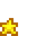
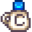

Plantilla:Quality
Ir a la navegación
Ir a la búsqueda

Consulte la página de documentación en inglés para obtener más información sobre esta plantilla.
Uso
Esta plantilla se puede utilizar ingresando lo siguiente en una página relevante.
{{Quality}}
Resultados en ...
Ejemplos
| Template Call | Result |
|---|---|
{{Quality|Parsnip|iridium}}
|
|
{{Quality|Parsnip|silver|24|center}}
|
|
{{Quality|Sunfish|normal|36}}
|
|
{{Quality|Red Plate|gold|36|center}}
|
 |
{{Quality|Beer|gold|48}}
|
|
{{Quality|Large Goat Milk ES|gold|32|center}}
|
 |